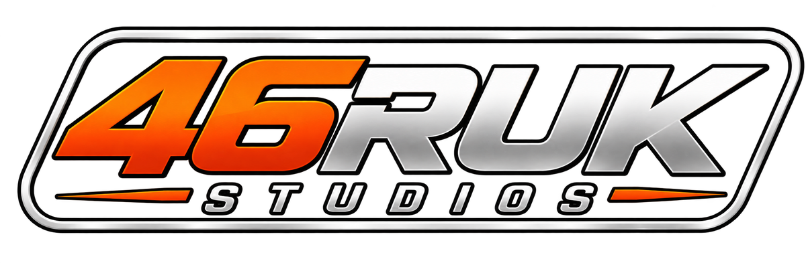

Gizlilik PolitikasıRevore 46 - İstanbul Rush
Kısaca: Revore 46 - İstanbul Rush kişisel verini toplamaz.
Cihazında kalanlar
Garajın, coin bakiyen, görevlerin, rekorların, ayarların ve satın alma kayıtların yalnızca bu cihazda saklanır. Bize veya üçüncü kişilere gönderilmez. Uygulamayı silersen bu veriler de silinir.
Hesap
Bu sürümde hesap veya giriş yoktur. Ad, e-posta, konum, kişiler, kamera, mikrofon veya reklam kimliği istenmez ve kullanılmaz.
Satın almalar
Uygulama içi satın almalar, uygulamayı indirdiğin mağaza tarafından işlenir. Ödeme ve kart bilgilerin bize ulaşmaz; o mağazanın gizlilik politikası geçerlidir. Kalıcı paketlerini "Satın alımları geri yükle" ile başka cihazına taşıyabilirsin.
Analiz ve reklam
Bu sürümde analiz aracı, izleme veya reklam ağı yoktur. İleride eklenirse bu sayfa güncellenir ve gerekiyorsa senden izin istenir.
Çocuklar
Uygulama çocuklardan kişisel veri toplamaz.
İletişim
Sorular için: revore46rush@gmail.com
Revore 46 - İstanbul Rush · Faruk Yalçın · Son güncelleme: Ekim 2026